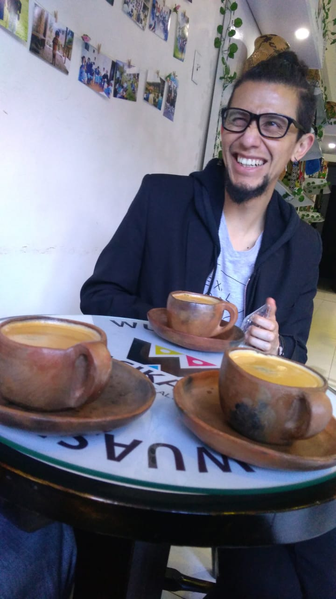

Biólogo de la universidad nacional y desarrollador de
software interesado particularmente en temas relacionados
con la evolución, los sistemas complejos y el arte digital.
La curiosidad es un elemento guía en la búsqueda de nuevos
aprendizajes y al unir el arte, la ciencias y la programación
genera un campo tan rico para explorar que lo que surge de
allí siempre valdrá la pena, bien sea solo para divertimiento
personal o para compartir con los cercanos y así poder
adaptar y aprender un poco más.

Las artes y la ciencia de entrada han tenido una
relación estrecha a lo largo del tiempo, sin embargo,
la sociedad actual busca la sobre-especialización
haciendo que los científicos y los artistas se
aparten en su diario quehacer. La búsqueda
artística está implícita en el ser humano,
hace parte de la conciencia y hasta me atrevería
a decir que de su biología. Entonces, el reencuentro
de las artes y las ciencias, (ojala todo mediado
por la tecnología) es el objetivo al cual debería
acudir la humanidad para así encontrarnos de nuevo
con esa parte sensible que ha acallado el moderno
estilo de vida.
Hay que vincular el arte con la
ciencia, llevarlo a entornos educativos para asi,
mostrar las cualidades de la
ciencia con la interfaz que provee el arte, dejar
de enseñar esta ciencia aburrida y ultra académica
y hacerla sensible a los ojos de la gente, además
de asequible, ya que ahora ambos parecen terrenos
inalcanzables, que sólo
en las grandes academias o con un cierto apellido
se pueden ejercer y apreciar.
La divulgación científica hace parte de todo eso,
pero si la divulgación de los hechos científicos
es matizada por el arte, seguramente la atención
prestada a ambos campos será mejor. Una ciencia con
arte y un arte científico como lo demuestra
Fontcuberta, que de manera asombrosa crea un
relato con sus animales fantásticos y su astronauta,
generando la curiosidad suficiente para investigar
si es solo ficción, sumergiendo al público en libros
de biología, de astronomía (arte + ciencia) y
mostrando la diferencia entre ciencia y pseudociencia
(un Carl Sagan artista).